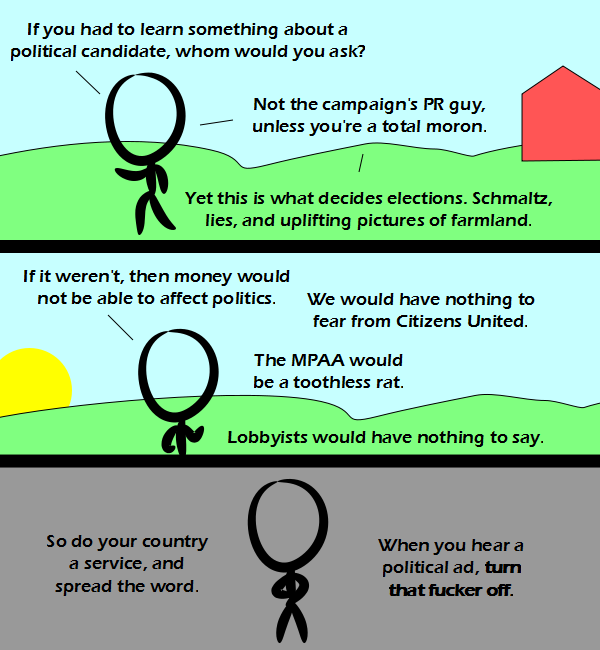

Comic JK 875
When I Feel Like It
⇤
<
?
>
⇥

⇤
<
?
>
⇥
Forum
.
RSS
.
Digg
.
Facebook
.
Reddit
.
Twitter
.
Stumbleupon
Enter your thoughts on number 875 here. Please, no spamming, trolling, phreaking, or campaigning on election day. Monarchy FTW! Yeah, uh, I believe that happens in most countries, not just the US. >That's a pity. >>Yes. Yes it is. If it was true democracy - rule by the people - those in politics would be more concerned about representing their constituents than about holding onto power. Thus, there would be no need for misleading political advertisements. >>>Is that not a republic. If it were a true democracy we would have people going door to door with ballots regarding every new law... >>>>Or have a Mandatory Voting Terminal™ in every home. >>>Representative democracy is still democracy. A republic I believe puts limitations on the power of the majority - the Constitution, for example. >>>>Listen, strange women laying in ponds distributing swords is no basis for a system of government! > While it does happen in most countries, most also have tighter laws against lobbying and political donations from corporations and cap large donations from individuals. >> Agreed, US elections are the most expensive even in proportion to GDP. These boards have been much less interesting since the deleter's been here. I wish he'd just go away. > Seems to me it's be fairly easy to make this comment board WORM-ish®. Why not make it so that you can't delete anything, only add? >>>So, like every other forum out there? >> But then it would take half of the fun away! Besides, wasn't there someone archiving the comments? >>>That would increase the troll content a lot. A revision history like at Wikipedia© would be nice. >>>>+1 >>>>>Yes, so when someone deletes an encyclopedic truth about your mother's fondness of my dick I can revert it. There's another way to do it, suggested by Bruce Ackerman and Ian Ayres: strictly require all donations to be anonymous. Money still has the same power, but candidates cannot pander to the lobbyists who give them money. People vote against their best interests becuase they are stupid. Taking the money out would help. So would enforcing slander laws to the point of curtailing it. All the folks who would be better candidates don't want to inflict the great media storm upon themselves or their family members. So I doubt you will see any more great presidents in this country until there is a major shift in how our process works. It's a great idea to get the money out of it; it's just a huge problem that a legion of well paid lobbyists are primed to lobby agaisnt. Good luck to us all. We're gonna need it.